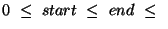

数字可以归类成不同的子类型，即：
For example, 2 is an integer, but it is also a rational, a real and a complex number.
比如，2 是一个整数，但是它同时也是一个有理数、实数以及一个复数。
Numbers can be represented both exactly and inexactly. A number is exact if it was written as an exact constant or was derived from exact numbers using only exact operations. Otherwise the number is inexact. The procedure inexact->exact is an exception to this rule.
数字可以表示为精确数或不精确数。如果一个数字书写为一个精确的常量，或者仅仅由精确的操作符产生，那么它就是精确数。否则就是不精确数。inexact->axact 过程是这个规则的一个例外。
A number may be expressed in binary, octal, decimal or hexadecimal by the use of a radix prefix: #b for binary, #o for octal, #d for decimal and #x for hexadecimal. If no prefix is specified the radix is in decimal by default.
数字可以通过指定前缀来表示成二进制、八进制、十进制或者十六进制：#b 表示二进制，#o 表示八进制，#d 表示十进制，#x表示十六进制。如果没有指定前缀，那么它默认表示的是十进制数。
Scheme 提供了下面的与数字有关的谓语：
(number? x) ;;是数字吗？ (complex? x) ;;是复数吗？ (real? x) ;;是实数吗？ (rational? x) ;;是有理数吗？ (integer? x) ;;是整数吗？ (exact? x) ;;是精确数吗？ (inexact? x) ;;是非精确数吗？ (zero? x) ;;是 0 吗？ (positive? x) ;;是正数吗？ (negative? x) ;;是负数吗？ (even? x) ;;是偶数吗？ (odd? x) ;;是奇数吗？
The names clearly imply what the procedures do, so we will only take a look at some examples:
它们的名字很清楚地表明了该函数具体是用来做什么的：
> (number? 5) #t > (complex? 5) #t > (zero? 0) #t > (even? 0) #t > (odd? 10) #f > (exact? (* 5 5)) #t >(inexact? 3.1415) #t
Arithmetic operations can be performed with the corresponding operators, for example:
可以用对应的运算符来执行算术运算：
> (+ 2 3 4) 9 > (- 5 6) -1 > (* 1 2) 2 > (/ 1 2) 1/2 > (/ 1 2.0) 0.5 > (+ (* 3 4) 2) 14
+, - and * are guaranteed to return exact results if the arguments are exact. Some implementations regard division as an exact operation if the arguments are exact. However, if division is performed on exact numbers, which are very large, the computation might become very slow. In that case one argument should be given as an inexact number, because it will speed up the computation, but the result will no longer be exact. Unless exact numbers are required this should not be a problem. Inexact numbers can also be converted into exact numbers with the procedure inexact->exact.
+ - * 保证返回精确的结果，如果它们的参数是精确数的话。一些实现把除法（/）也看成是一个精确操作符，如果它的操作数也是精确数。然而，如果对一个非常巨大的精确数执行除法运算可能会非常地慢。在那种情况下，一个参数应该被作为一个非精确数，因为这样能加快计算，但是结果也将是非精确数。除非你需要一个精确的结果，否则这不会有什么大问题。非精确数可以通过 inexact->exact 转换成精确数。
There are also a couple of procedures which test whether their arguments are equal, monotonically increasing or decreasing or monotonically nonincreasing or decreasing. These are:
还有一些过程来测试它们的参数是否相等、递增或者递减。它们是：
(= x1 x2 ...) (> x1 x2 ...) (< x1 x2 ...) (>= x1 x2 ...) (<= x1 x2 ...)
They return either #t or #f. For example:
它们返回真或者假（#t or #f）：
> (< 3 4 5 6) #t > (<= 3 4 5 6) #t > (> 4 2 3 6) #f
Note that = should only be used with exact numbers even if it isn't an error to use it on inexact ones8.1. If used on inexact numbers, it might return something unexpected because of the representation of inexact numbers in the machine.
注意，相等谓语 = 仅仅用来比较精确数，但是如果你传递给它一个非精确数并不会引发错误。如果把 = 用于非精确数，因为非精确数在机器里面的表示，它可能会返回一些未预料的东西，
Scheme also provides various mathematical procedures:
Scheme 也提供了不同的数字函数：
(abs x) ; 返回 x 的绝对值
(acos x) ; 反余弦函数
(asin x) ; 反正弦函数
(atan x) ; 反正切函数
(atan x1 x2) ; computes (angle (make-rectangular x2 x1))
(cos x) ; 余弦函数
(exp x) ; 自然常数 e 为底的指数函数
(expt n k) ; 返回 n 的 k 次方
(log x) ; 对数函数
(sqrt x) ; 平方根函数
(sin x) ; returns the sine of x
(tan x) ; returns the tangent of x
(ceiling x) ; 向上取整
(floor x) ; 向下取整
(round x) ; 四舍五入取整
(truncate x) ; 截短取整
(denominator x) ; 返回 x 的分母
(numerator x) ; 返回 x 的分子
(gcd x1 x2 ...) ; 求最大公约数
(lcm x1 x2 ...) ; 求最小公约数
(max x1 x2 ...) ; 返回参数中的最大值
(min x1 x2 ...) ; 返回参数中的最小值
(quotient x1 x2) ; 返回 x1 / x2 的商（整除法）
(modulo x1 x2) ; 取模运算
(remainder x1 x2) ; 取余运算，基本类似于取模运算，但是涉及到负数时，两者行为不太一样
(rationalize x1 x2) ; returns the simplest rational number differing
; from x1 no more than x2
For example, we can define  by using the mathematical procedure
acos in the following way:
by using the mathematical procedure
acos in the following way:
例如，我们可以通过数字函数 acos 来定义 PI：
> (define pi (acos -1)) > pi 3.1415926535898
As can be seen from the list above, there are four procedures for rounding numbers.
如上面列出，总共有四种方法用来对一个数字取整
The procedure round rounds the argument to the nearest integer, but if the arguments is halfway between two integers, it rounds it to the nearest even integer. For example:
round 四舍五入取整，但是如果正好位于两个整数之间（x.5）,它四舍五入到最接近的偶数。
> (round pi) 3.0 > (round 3.5) 4.0 > (round 2.5) 2.0 > (round -2.5) ;;注意这里的结果不是3 -2.0 > (round -3.4) -3.0 > (round -3.5) -4.0
The procedure truncate chops the decimal part of the argument:
truncate 简单地丢弃小数部分：
> (truncate pi) 3.0 > (truncate 3.5) 3.0 > (truncate -3.5) -3.0
The procedure ceiling returns the smallest integer which is greater than or equal to the argument, for example:
ceiling 返回大于或等于参数的最小整数（向上取整）
> (ceiling pi) 4.0 > (ceiling 3.5) 4.0 > (ceiling -3.5) ;;注意负数的情况 -3.0
The procedure floor returns the largest integer which is less than or equal to the argument, for example:
floor 过程返回小于或等于参数的最大整数（向下取整）
> (floor pi) 3.0 > (floor 3.5) 3.0 > (floor -3.5) ;;同样要注意负数的情况 -4.0
Scheme also provides some trigonometric functions. Note that the argument is in radians. For example:
> (sin pi) 0.0 > (cos pi) -1.0 > (- (tan pi) (/ (sin pi) (cos pi))) 0.0 > (sqrt (ceiling (abs (cos pi)))) 1.0
Some general procedures for complex numbers are also provided:
(make-rectangular x1 x2) ; constructs a complex number in rectangular form (make-polar x1 x2) ; constructs a complex number in polar form (real-part z) ; returns the real part of the complex number z (imag-part z) ; returns the imaginary part of the complex number z (magnitude z) ; returns the magnitude of the complex number z (angle z) ; returns the angle of the complex number z
For example,
> (define a (make-rectangular 3 4)) > a 3+4i > (real-part a) 3 > (imag-part a) 4 > (magnitude a) 5 > (angle (make-rectangular 3 4)) 0.92729521800161
Scheme also provides the procedures inexact->exact and exact->inexact for converting inexact numbers into exact and vice versa, for example:
> (inexact->exact 5.0) 5 > (exact->inexact 5) 5.0
The boolean objects are true and false and are written as #t and #f. All standard values in Scheme except #f count as true in conditional expressions.
布尔对象只有两个：真和假，分别写作 #t 和 #f。在 Scheme 条件表达式里，所有不是 #f 的值都视作为真。
Boolean constants evaluate to themselves and need not be quoted in programs, e.g.
布尔常量是自求值的，在程序中不需要引用，即
> #f #f > #t #t
Scheme provides a predicate boolean? with the following syntax:
Scheme 提供了一个谓语 boolean? 来测试对象是否是一个布尔值：
(boolean? x)
If x is either #t or #f, then #t is returned, otherwise #f is returned.
如果 x 是 #t 或者 #f，它返回 #t, 否则返回 #f。
> (boolean? #t) #t > (boolean? '()) #f > (boolean? (eq? 'x '(x y z))) #t
Another procedure is not, which takes one argument and negates it:
另一个过程是 not，它接受一个参数，并且否定它：
> (not #f) #t > (not (= 5 4)) #t
Also the special forms and and or are used on boolean expressions.
特殊结构 and 和 or 也用于布尔表达式中。
Characters are letters, numbers and other symbols on the computer keyboard as well as some control characters such as newline and space. Characters are written using the notation #\<char> or #\<character name>. The former is case sensitive whereas the latter is not.
字符包括字母、数字、电脑键盘上的其它符号以及一些控制字符，比如 换行、空格。字符用 #\<char> 或者 #\<character name> 来表示。前者是大小写敏感的，而后者不是。
例如:
#\space #\newline #\s
Characters written in the #\ notation are self-evaluating.
用 #\ 标示的字符是自求值的。
Most of the procedures for characters are predicates. If the procedure ignores case it usually has -ci embedded in its name.
大多数与字符有关的内置过程是谓语。如果过程忽视大小写，那么它的名字中通常嵌入了 -ci。
Scheme provides the procedure char?, which has the following syntax:
(char? x)
If x is a character, the procedure returns #t, otherwise it returns #f. For example:
如果 x 是一个字符，过程返回 #t, 否则返回 #f, 例如：
> (char? #\a) #t > (char? 'a) ;; 'a is a symbol, not a character #f > (char? "a") ;; "a" is a string, not a character #f > (char? #\space) #t
There are also procedures for finding out whether a given character comes before or after another character in the alphabet. These are
有几个过程用于判断在字母表中一个字符是否位于另一个字符的前面或者后面。
(char=? ch1 ch2) ; Is ch1 the same character as ch2? (char<? ch1 ch2) ; Does ch1 come before ch2 in the alphabet? (char>? ch1 ch2) ; Does ch1 come after ch2 in the alphabet? (char<=? ch1 ch2) ; Does ch1 come before ch2 or are they both the same? (char>=? ch1 ch2) ; Does ch1 come after ch2 or are they both the same? (char-ci=? ch1 ch2) ; The same as char=? but case-insensitive (char-ci<? ch1 ch2) ; The same as char<? but case-insensitive (char-ci>? ch1 ch2) ; The same as char>? but case-insensitive (char-ci<=? ch1 ch2) ; The same as char<=? but case-insensitive (char-ci>=? ch1 ch2) ; The same as char>=? but case-insensitive
Note that the lower case letters are in order, the upper case letters are in order and the digits are in order and that all the upper case letters precede all the lower case or vice versa. Also note that all the digits either precede all the upper case letters or vice versa and that all the digits either precede all the lower case letters or vice versa.
The following example shows the use of the procedures mentioned above, but the result returned of the last expression is implementation-dependent:
下面的例子演示了上面提到的过程的用法。但是最后一个表达式的结果依赖于具体的实现：
> (char=? #\a #\A) #f > (char-ci=? #\a #\A) #t > (char<? #\a #\b) #t > (char>? #\a #\A) #t
Scheme also provides procedures for finding out what kind of character is in question, e.g. is it a digit, an alphabetic character...These procedures are:
Scheme 也提供了几个过程来判断字符的类型，即它是否是数字，或者字母...这些过程是：
(char-alphabetic? ch) ;;ch 是字母吗 (char-numeric? ch) ;;ch 是数字字符吗 (char-whitespace? ch) ;;ch 是空白字符吗（空格、回车等都算空白字符） (char-upper-case? ch) ;;ch 是大写字母吗 (char-lower-case? ch) ;;ch 是小写字母吗
Space, tab, line feed, form feed and carriage return are all regarded as whitespace characters.
空格、制表符、换行符、换页和回车都视为空白字符。
例如:
> (char-alphabetic? #\a) #t > (char-numeric? #\a) #f > (char-numeric? #\2) #t > (char-upper-case? #\A) #t > (char-lower-case? #\A) #f
There are also procedures for converting characters to integers representing the character (e.g. in the ASCII character set) and vice versa. These procedures are char->integer and integer->char and have the following syntax:
同样地，可以在字符和整数之间进行转换（ASCII码）。
(char->integer ch) (integer->char n)
and can be used for example in the following way:
> (char->integer #\3) 51 > (char->integer #\a) 97 > (integer->char 56) #\8 > (integer->char (char->integer #\b)) #\b
Note that the result returned by these procedures are implementation dependent.
注意，这些过程的结果依赖具体的实现。
Scheme also provides two procedures for converting upper case characters to lower case and vice versa. They are the following:
Scheme 也提供了两个过程来转换大小写：
(char-upcase ch) ;;转换成大写 (char-downcase ch) ;;转换成小写
For example:
> (char-upcase #\a) #\A > (char-downcase #\B) #\b > (char-downcase #\b) #\b > (char-downcase (char-upcase #\c)) #\c
Symbols are objects, whose usefulness rest on the fact that two symbols are equal if and only if their names are spelled the same way.
Scheme provides a predicate symbol?, which takes one argument and returns #t if the argument was a symbol and #f otherwise. For example,
> (symbol? 'boo) #t > (symbol? "boo") #f > (symbol? (car '(a b c))) #t > (symbol? '()) #f
There are also two procedures for converting a symbol to a string and vice versa, namely the procedures symbol->string and string->symbol. Note that the strings returned by symbol->string are immutable.
有两个过程可以在符号和字符串之间互相转换
The procedures symbol->string and string->symbol work in the following way:
> (symbol->string 'foo) "foo" > (string->symbol "foo") foo > (symbol->string (string->symbol "bar")) "bar"
A string is written as a sequence of characters enclosed in double quotes. The length of the string is the number of characters it contains. The first character has the index value zero. Doublequotes can be written inside a string by escaping them with a backslash.
一个字符串是用双引号包括起来的字符序列。字符串的长度是字符串所包含的字符的数量。第一个字符的索引值是 0。双引号本身可以是字符串的一部分，但是前面要加上反叙杠。
例如:
"This is a string and \"this is a string\" is also a string."
Scheme provides a predicate string? for testing whether a given object is a string. It has the following syntax:
(string? str)
If str is a string, #t is returned, otherwise #f is returned. For example,
> (string? "boo") #t > (string? 'boo) ; false, because 'boo is a symbol #f > (string? 5) ; false, because 5 is a number #f > (string? "") #t
Scheme also provides a variety of predicates for determining the lexicographic order of two strings. If two strings differ in length in such a way that one is the prefix of the other, the shorter string is considered to be lexicographically less than the other. The procedures can be regarded as extensions to strings of the corresponding orderings of characters.
Scheme 同样提供了一些变种过程用于判定两个字符串的字面序列。如果两个字符串长度不一致，较短的字符串比另一个要“小”。这些过程可以视为对应的字符函数的扩展。
The predicates are the following:
(string=? str1 str2) ; Is str1 the same as str2? (string<? str1 str2) ; Is str1 lexicographically less than str2? (string>? str1 str2) ; Is str2 lexicographically less than str1? (string<=? str1 str2) ; Is str1 lexicographically less than or equal to str2? (string>=? str1 str2) ; Is str2 lexicographically less than or equal to str1? (string-ci=? str1 str2) ; The same as string=? but case-insensitive (string-ci<? str1 str2) ; The same as string<? but case-insensitive (string-ci>? str1 str2) ; The same as string>? but case-insensitive (string-ci<=? str1 str2) ; The same as string<=? but case-insensitive (string-ci>=? str1 str2) ; The same as string>=? but case-insensitive
The procedures containing -ci are case-insensitive. For example:
> (string=? "foo" "FOO") ; false, considered as different strings #f > (string-ci=? "foo" "FOO") ; true, the procedure is case-insensitive #t > (string<? "bar" "foo") ; true, since bar comes before foo #t > (string<? "foobar" "foo") ; false, foo is a prefix of and "less than" foobar #f
Scheme also provides various procedures for creating and manipulating strings. Strings can be created with the procedures make-string and string. They have the following syntax:
Scheme 同样提供了几个过程来自动或手动生成字符串。
(make-string n) ;;n 指定字符串长度，由\u0000填充 (make-string n ch) ;;n 指定字符串长度，由 ch 填充 (string ch1 ch2 ...) ;;将 ch1 ch2 ... 等单个字符组成一个字符串
It is also possible to create a string using doublequotes. Such strings are so called string constants and cannot be changed later with procedures such as string-set!. For example:
可以用双引号创建一个字符串，这样的字符串称作字符串常量，不能通过 string-set! 来改变其内容，例如：
> "foo" "foo"
Even if some implementations allow changing constant strings, you should not be tempted to do so!
甚至有一些实现允许修改字符串常量，但是你不应该想这么干！
The procedure make-string takes either one or two arguments, where n is the number of characters and ch represents the character. If ch is given, all characters in the string will be initialied to ch, otherwise the contents of the string are implementation-dependent. The procedure string takes an arbitrary number of characters and returns a string composed of the given characters. For example:
> (make-string 10 #\a) "aaaaaaaaaa" > (string #\S #\c #\h #\e #\m #\e) "Scheme"
The length of the string is the number of characters it is composed of. The length of the empty string is 0. Scheme provides a procedure for computing the length of the string, namely string-length, which takes one string as an argument and returns an integer. For example:
字符串的长度是它包含的字符的数量。空字符串的长度是 0. Scheme 提供了一个过程来计算字符串的长度，名叫 string-length。它接受一个字符串作为参数，并返回一个整数。
> (string-length "Scheme") 6 > (string-length "This is a very clever sentence") 30 > (string-length "") 0
Strings can also be concatenated using string-append, which takes an arbitrary number of arguments and returns a newly allocated string composed of the characters of the strings given as arguments. For example:
字符串可以通过 string-append 过程连接在一起，它接受任意数量的参数，并返回一个包含所有参数的新字符串。
> (string-append "foo" "bar" "foo" "bar" "foobar") "foobarfoobarfoobar" > (string-append "Hello!" " " "My name is Torsten") "Hello! My name is Torsten" > (string-append) ""
It is also possible to extract characters from a string using the string-ref procedure, which takes a string and an integer n and returns the nth character. Note that the first character has the index 0. For example:
同样地，可以通过 string-ref 过程从一个字符串中抽取出字符。它接受一个字符串和整数参数 n，并返回字符串中的第 n 个字符。记住，字符串中的字符是从 0 开始索引的。
> (string-ref "foobar" 0) #\f > (string-ref "foobar" 1) #\o > (string-ref "foobar" 10) string-ref: index 10 out of range [0, 5] for string: "foobar"
Scheme also provides a procedure substring with the following syntax:
Scheme 同样提供了一个过程 substring 来从一个字符串中提取出一个子字符串：
(substring str start end)
str must be a string and start and end are integers
such that
 the length of the string.
For example:
> (substring "foobar" 1 3) "oo" > (substring "foobar" 0 0) ""
Scheme provides procedures for converting strings to lists of characters and vice versa. These are string->list and list->string and work in the following way:
可以在字符串及字符列表之间互相转换。
> (string->list "foobar") (#\f #\o #\o #\b #\a #\r) > (list->string '(#\f #\o #\o #\space #\b #\a #\r)) "foo bar" > (list->string '()) "" > (string->list "") ()
Strings can be copied with the string-copy procedure, which takes a string to be copied as argument and returns a newly allocated copy of the argument. For example:
字符串可以通过 string-copy 来拷贝：
> (string-copy "foobar") "foobar" > (define a "foobar") > (define b (string-copy a)) > b "foobar"
There are two procedures causing side effects, namely string-set! and string-fill!. The procedure string-set! has the following syntax:
有两个字符串相关的函数具有副作用：
(string-set! str n ch)
and stores ch in element n of str. The value returned is unspecified.
将 ch 存储进字符串 str 的第 n 个索引位置，返回值未定义。
For example:
> (define str (string #\f #\o #\o #\b #\a #\r)) > str "foobar" > (string-set! str 2 #\d) > str "fodbar" > (string-set! str 0 #\b) > str "bodbar"
The procedures string-set! and string-copy are often used together. We might, for example, want a copy of a given string, which we want to change without changing the original string:
string-set! 和 string-copy 经常一起使用。也许我们想拷贝一个字符串，想修改这个拷贝的字符串但是又不想改变原始的字符串。
> (define str (string #\f #\o #\o #\b #\a #\r)) > (define foo (string-copy str)) > str "foobar" > foo "foobar" > (string-set! foo 0 #\g) > str "foobar" > foo "goobar"
The procedure string-fill! has the following syntax:
(string-fill! str ch)
and stores ch in every element of str as a side effect. The return value is unspecified.
将 str 用 ch 来填充，长度不变，返回值未定义。
For example:
> (define str (string #\f #\o #\o #\b #\a #\r)) > (string-fill! str #\a) > str "aaaaaa"
一个点对是一个复合数据结构。它同过程 cons 创建，cons 接受两个参数并且返回一个包含那两个参数的复合数据对象。其中所包含的两个参数可以通过 car 和 cdr 抽取出来。
例如:
(cons 1 2)
constructs a pair consisting of the two integers 1 and 2. The external representation of this pair is (1 . 2). If we wish to give our compound data object a name, we can use define as we are used to:
(define a (cons 1 2))
If we wish to extract the first integer in the pair, we use car
>(car a) 1
and if we wish to extract the second integer, we use cdr:
>(cdr a) 2
(2 4 6 8 10)
In other words, a list is a chain of pairs ending in the empty list. If the chain of pairs does not end with the empty list, the list is said to be improper. An improper list is not a list!
The empty list is denoted (). The list (2 4 6 8 10) is the same as (2 . (4 . (6 . (8 . (10 . ()))))). An improper list can be represented using dotted notations in the following way: (2 4 6 8 . 10), which is equivalent to (2 . (4 . (6 . (8 . 10)))).
Note that lists should be quoted when fed to the interpreter, otherwise the interpreter will try to apply the first item in the list to the other items in the list, e.g.
> (2 4 6 8) procedure application: expected procedure, given: 2; arguments were: 4 6 8 > '(2 4 6 8) (2 4 6 8)
Lists can be constructed using cons in the following way:
(cons 2 (cons 4 (cons 6 (cons 8 (cons 10 '())))))
Note that
(cons 1 (cons 2 '()))
is a list, whereas
(cons 1 2)
is not. The latter is a pair. A list is constructed from pairs and is consiedered a pair, but a pair is not in itself a list! The empty list is, however, not a pair.
Lists can also be constructed using the procedure list as follows:
(list 2 4 6 8 10)
If we wish to take lists apart, we can use car and cdr and combinations thereof. For example:
>(car (list 2 4 6 8 10)) 2
whereas
>(cdr (list 2 4 6 8 10)) (4 6 8 10)
The result of applying cdr to a list is always a list.
Let's say that we want to extract the second element in the list. In order to accomplish this we can combine car and cdr in the following way:
>(car (cdr (list 2 4 6 8 10))) 4
There is a shortening for combined car:s and cdr:s. The same could be accomplished as follows:
>(cadr (list 2 4 6 8 10)) 4
car:s and cdr:s can be combined four times. Hence, the following combinations exist:
(caar ls) ; is the same as (car (car ls)) (cadr ls) ; is the same as (car (cdr ls)) (cdar ls) ; is the same as (cdr (car ls)) (cddr ls) ; is the same as (cdr (cdr ls)) (caaar ls) ; is the same as (car (car (car ls))) (caadr ls) ; is the same as (car (car (cdr ls))) (cadar ls) ; is the same as (car (cdr (car ls))) (caddr ls) ; is the same as (car (cdr (cdr ls))) (cdaar ls) ; is the same as (cdr (car (car ls))) (cdadr ls) ; is the same as (cdr (car (cdr ls))) (cddar ls) ; is the same as (cdr (cdr (car ls))) (cdddr ls) ; is the same as (cdr (cdr (cdr ls))) (caaaar ls) ; is the same as (car (car (car (car ls)))) (caaadr ls) ; is the same as (car (car (car (cdr ls)))) (caadar ls) ; is the same as (car (car (cdr (car ls)))) (caaddr ls) ; is the same as (car (car (cdr (cdr ls)))) (cadaar ls) ; is the same as (car (cdr (car (car ls)))) (cadadr ls) ; is the same as (car (cdr (car (cdr ls)))) (caddar ls) ; is the same as (car (cdr (cdr (car ls)))) (cadddr ls) ; is the same as (car (cdr (cdr (cdr ls)))) (cdaaar ls) ; is the same as (cdr (car (car (car ls)))) (cdaadr ls) ; is the same as (cdr (car (car (cdr ls)))) (cdadar ls) ; is the same as (cdr (car (cdr (car ls)))) (cdaddr ls) ; is the same as (cdr (car (cdr (cdr ls)))) (cddaar ls) ; is the same as (cdr (cdr (car (car ls)))) (cddadr ls) ; is the same as (cdr (cdr (car (cdr ls)))) (cdddar ls) ; is the same as (cdr (cdr (cdr (car ls)))) (cddddr ls) ; is the same as (cdr (cdr (cdr (cdr ls))))
For example:
>(caddr (list 2 4 6 8 10)) 6 >(car (cdr (cdr (list 2 4 6 8 10)))) 6
These procedures can also be combined if the standards ones are insufficient. For example:
> (define ls '(((((((1 2) 3) 4) 5) 6) 7) 8)) > (caaaar ls) (((1 2) 3) 4) > (car (caaaar ls)) ((1 2) 3) > (cdaar (caaaar ls)) (2)
Scheme also provides the procedures set-car! and set-cdr! for explicitly changing the value of the car or cdr of a list. This is done as a side effect and the return value is unspecified.
> (define ls (list 1 2 3 4 5)) > ls (1 2 3 4 5) > (set-car! ls 10) > ls (10 2 3 4 5) > (set-cdr! ls '()) > ls (10)
Note that lists created in the following way cannot be changed using set-car! or set-cdr!:
> (define ls '(1 2 3 4 5))
This is because ls is now a list constant that cannot be changed. Don't be tempted to do it incorrectly even if the implementation allows it.
Care should be taken when using set-car! and set-cdr!. For example: when using set-cdr!, we may run into situations in which the object is a list at first, but after application of set-cdr! it is not.
The length of a list is the number of top-level items in it. Scheme provides a procedure length for computing the length of the list, which is given as an argument. For example:
>(length (list 2 4 6 8 10)) 5
The length of the empty list is 0.
> (length '()) 0
There are a couple of predicates for pairs and lists, namely pair?, list? and null?. They have the following syntax:
(pair? x) (list? x) (null? x)
The predicate pair? returns #t if x is a pair, otherwise it returns #f. The predicate list? returns #t if x is a proper list and #f otherwise. The predicate null? returns #t if x is the empty list and #f otherwise.
> (pair? (list 1 2 3 4)) #t > (pair? (cons 1 2)) #t > (pair? '()) #f > (pair? (car '(1 2 3))) #f > (pair? (cdr '(1 2 3))) #t > (pair? (car '((1 2) 3 4))) #t > (pair? (cdr '(1 2))) #t
The first example is considered a pair, since a list is a chain of pairs ending in the empty list. The second example is naturally a pair, but the third one, namely the empty list, is not a pair. Numbers are not pairs either, so if the car of the list whose first item is not a pair or a list is tested using pair?, then #f will be returned. If the first element, on the other hand, is a pair or a list, then #t will be returned. One might wonder, why the procedure in the last example returns #t instead of #f. This is because (1 2) is a list and lists always end with the empty list, so the cdr of (1 2) is not 2, but (2)!
> (list? (list 1 2 3 4)) #t > (list? (cons 1 2)) #f > (list? (cons 1 (cons 2 '()))) #t > (list? '()) #t > (list? '(a . b)) #f
The first example is obviously a list, but the second is not, since a pair is not a list. Lists end in the empty list, so the third example is a list. Also the empty list alone is a list. The last example yields false, because the list '(a . b) is not a proper list.
The predicate null? can be used as follows:
> (null? '(1 2 3)) #f > (null? '()) #t > (null? #f) #f
If we wish to address a given element in a list we might want to use list-ref, which takes two arguments, a list ls and an integer n and returns the n:th item in ls. For example:
>(list-ref '(1 2 3 4) 2) 3 > (list-ref '(1 2 3 4) 0) 1 > (list-ref '(1 2 3 4) 5) list-ref: index 5 too large for list: (1 2 3 4)
Note that the index of the first item is 0! It is illegal to try to reference an item with an index number larger than or equal to the length of the list.
If we want to return the sublist of a given list by omitting the first n items, we may use the procedure list-tail, which takes two arguments, a list and an integer n as follows:
> (list-tail '(1 2 3 4 5) 2) (3 4 5) > (list-tail '(1 2 3 4 5) 0) (1 2 3 4 5) > (list-tail '(1 2 3 4 5) 5) () > (list-tail '(1 2 3 4 5) 7) list-tail: index 7 too large for list: (1 2 3 4 5)
As we can see, it is an error if n is larger than the length of the list.
To reverse the order of items in a list we can use the procedure reverse as follows:
>(reverse '(1 2 3 4)) (4 3 2 1) > (reverse '((1 2) (3 4) (5 6))) ((5 6) (3 4) (1 2))
Scheme also provides a procedure append for appending lists, which are given as arguments:
> (append '(1 2 3) '(4 5 6)) (1 2 3 4 5 6) > (append '() '(1)) (1) > (append '(1 2 (3 4)) '()) (1 2 (3 4)) > (append '(1 2 3) '(4 5 6) '(7 8 9)) (1 2 3 4 5 6 7 8 9)
The resulting list is almost always newly allocated, but it shares structure with the last argument. If the last argument is not a proper list, then applying append will result in an improper list:
> (append '(1 2) 'b) (1 2 . b) > (append '() 'c) c
There are also a couple of procedures for finding out whether a given element can be found in a list, namely memq, memv and member. These are not considered to be predicates, because they return useful values instead of merely #t or #f. The syntax is as follows:
(memq x ls) (memv x ls) (member x ls)
The difference between them is that memq uses eq? to compare, memv uses eqv? and member uses equal?8.2. The usage and return values of these procedures can best be described with a few examples:
> (memq 'a '(a b c)) (a b c) > (memq 'b '(a b c)) (b c) > (memv 'a '(a b c)) (a b c) > (member 'a '(a b c)) (a b c) > (memq 'a '(b c d)) #f > (memv 'a '(b c d)) #f > (member 'a '(b c d)) #f
As we can see, the procedures return the same values for top-level items. Note that #f is returned if the element cannot be found instead of the empty list!
> (memq '(2 3) '((2 3) 4)) #f > (memv '(2 3) '((2 3) 4)) #f > (member '(2 3) '((2 3) 4)) ((2 3) 4)
The procedure member, which uses equal? to compare the contents of the list, is the only one that returns #t because equal? checks if two objects have the same value (e.g. if two lists contain the same items) as opposed to eq? and eqv? that check if two objects refer to the same place.
There are also three procedures for finding the first pair with a given car field in an association list, namely assq, assv and assoc. They have the following syntax:
(assq x als) (assv x als) (assoc x als)
An association list is a list of pairs, for example: ((x 10) (y 20) (z 30)). Let's take a look at a few examples:
> (define als '((x 10) (y 20) (x 30))) > (assq 'a als) #f > (assq 'x als) (x 10) > (assq 'y als) (y 20) > (assv 'x als) (x 10) > (assoc 'x als) (x 10) > (assoc (list 'x) '(((x)) ((b)) ((c)))) ((x))
The difference between assq, assv and assoc is that assq uses eq? to compare, assv uses eqv? and assoc uses equal?.
Another extremely useful procedure in Scheme is map, which takes a procedure and an arbitrary number of lists as arguments and returns a list. If one list is given as an argument, the procedure will be applied to each element of the list. If two or more lists are given as arguments, the procedure is applied to each nth item of each list. The lists must all be of the same length. The procedure must of course be applicable to the elements in the list, otherwise an error will occur. Let's say we want to add one to each element in the list (1 2 3 4 5). This can be done in the following way:
> (map (lambda (x) (+ x 1)) '(1 2 3 4 5)) (2 3 4 5 6)
Let's say that we want to compute the factorial of each element in the list. The easiest way is to first define a procedure for computing the factorial of an integer and then feed the procedure to map as follows:
(define fact
(lambda (n)
(if (= n 0)
1
(* n (fact (- n 1)))))
> (map fact (list 1 2 3 4 5))
(1 2 6 24 120)
Now we might want to raise the factorial of each element in the list to a given power. This requires a function taking two arguments. So, how can we accomplish our task? Let's start by defining a procedure for raising the factorial of a number to a given power:
(define fact-expt
(lambda (n e)
(expt (fact n) e)))
In order to use the procedure we can use map and keep the value of e, the second argument of fact-expt, constant in the following way:
> (map (lambda (x) (fact-expt x 1)) (list 1 2 3 4 5)) (1 2 6 24 120) > (map (lambda (x) (fact-expt x 2)) (list 1 2 3 4 5)) (1 4 36 576 14400) > (map (lambda (x) (fact-expt x 3)) (list 1 2 3 4 5)) (1 8 216 13824 1728000)
Note that map only works on the top-level items of a list.
If two or more lists are given as arguments to map, the procedure will be applied to each nth element of the lists, e.g:
> (map + '(1 2 3) '(1 2 3)) (2 4 6) > (map * '(1 2 3) '(1 2 3) '(1 2 3)) (1 8 27)
Another procedure resembling map but used only for its side effects is for-each, which has the following syntax:
(for-each proc ls1 ls2 ...)
The difference between map and for-each is that the latter is guaranteed to apply the procedure to the elements in the order they appear. Also note that map returns a list, whereas the return value of for-each is unspecified. Let's look at a quick example:
> (for-each
(lambda (x)
(begin
(display x)
(newline)))
'(I am the greatest))
i
am
the
greatest
In fact, for-each is commonly used for input and output.
Sometimes we want to apply a procedure to a list using the items of the list as arguments to the procedure. Scheme has a procedure apply for this purpose. apply has the following syntax:
(apply proc arg1 ... args)
The argument proc must be a procedure and args must be a list. The other arguments may be of any type as long as the procedure given is applicable. The usage of apply is best described with a few examples:
>(apply + 1 2 '(3)) 6 > (apply + '(1 2 3)) 6 > (apply - 1 2 3 4 '()) -8 > (apply * (map (lambda (x) (fact x)) '(1 2 3))) 12
Vectors are data types that associate elements with an integer starting from zero. The difference between vectors and lists are that vectors usually occupy less space than the corresponding list and the time required to access a random element is constant. Most of the procedures operating on lists are linear in time.
Vectors are represented as #(obj ...), for example:
#((2 4 6 8) 1 "Scheme")
The length of a vector is the number of elements it contains. The length of the vector above is hence 3.
Scheme provides a predicate vector? for determining whether a given object is a vector or not. For example:
> (vector? '(1 2 3 4)) #f > (vector? '#(1 2 3 4)) #t
There is a variety of procedures for creating and manipulating vectors. Vectors can be created with the procedures vector and make-vector. The procedure vector takes an arbitrary number of arguments and returns a newly allocated vector containing the arguments as elements, for example:
> (vector 'a 'b "foobar" '(1 2 3 4) '#(another vector)) #(a b "foobar" (1 2 3 4) #(another vector)) > (vector) #()
The procedure make-vector has the following syntax:
(make-vector n) (make-vector n k)
If k is given, a newly allocated vector consisting of n elements, which all are k, will be returned. Otherwise, the contents of the vector returned will be unspecified. For example:
> (make-vector 3)
#(0 0 0)
> (make-vector 3 "foobar")
#("foobar" "foobar" "foobar")
The length of the vector is the number of elements in it. Scheme provides a procedure vector-length, which takes a vector as argument and returns the length of the vector as follows:
> (vector-length '#(a b c d)) 4 > (vector-length '#(a b #(a b) '(a b))) 4 > (vector-length '#()) 0
To reference an item in the vector, you can use the procedure vector-ref, which takes a vector and an integer n as arguments and returns the n:th element in the vector. Note that the first element is indexed as 0.
> (vector-ref '#(1 2 3 4) 2) 3 > (vector-ref '#(1 2 3 4) 0) 1
Vectors can be converted to lists and vice versa with the procedures vector->list and list->vector. For example:
> (vector->list '#(1 2 3 4)) (1 2 3 4) > (list->vector '(1 2 3 4)) #(1 2 3 4)
Scheme provides a procedure vector-set!, which has the following syntax:
(vector-set! vec n k)
and stores the object k in index n of the vector vec. The return value is unspecified.
For example:
> (define v (vector 'a 'b 'c 'd)) > (vector-set! v 0 1) > v #(1 b c d) > (vector-set! v 3 '(a list of elements)) > v #(1 b c (a list of elements))
Note that the procedure vector-set! cannot be used on vector constants.
Another procedure causing side effects is vector-fill!, which has the following syntax:
(vector-fill! vec k)
It stores k in every element of vec. The return value is unspecified. For example:
> (define v (vector 1 2 3 4)) > v #(1 2 3 4) > (vector-fill! v '(1 2)) #((1 2) (1 2) (1 2) (1 2))
The procedure vector-fill! cannot be used on vector constants either.
Note that even if the implementation returns something useful, as it did in our example above, procedures which are used for their side effects (such as vector-fill!) should never be used for the values they might return.